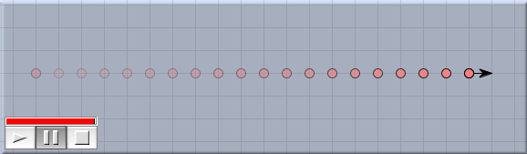
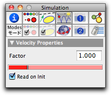

Velocity
The velocity mode requires a press/drag/release sequence. The press generates a free mass, the drag generates a black arrow connected to the mass, and the release freezes the situation. The arrow is an indicator for the velocity (speed plus direction) of the mass point. Its direction indicates the direction of the motion, and its length indicates the absolute value of the velocity, that is, the speed. The longer the arrow, the faster the object. Pressing the mouse button over an existing mass adds a velocity arrow to that mass.
Velocity arrows are used for two purposes:
- Initialization: When the simulation is started, a mass with a velocity arrow will be initialized with the corresponding velocity value (this happens only if the "read on init" box of the velocity is checked).
- Visualization: During the animation the velocity arrow of a mass always represents the actual velocity of the mass.
A priori it is not clear what length corresponds to what speed of a mass point. Therefore, some convention is necessary. The convention taken in
CindyLab is best understood in the case in which the animation-speed slider is dragged to its maximum. In this case, a mass travels exactly the length of its velocity arrow in one simulation time step. The situation is illustrated in the following picture.
 |
| Trace of a mass point with unit velocity |
For many purposes this behavior may be a bit too fast, but it is a good way of normalizing the speed treatment.
Inspecting Velocities
The basic properties of a velocity can be set and changed by inspecting it with the
Inspector and opening the physics tab (this is the fourth tab in the top row). The physics inspector for a generic mass looks as follows:
 |
| The velocity inspector |
The precise meaning of the two controls is as follows:
- Factor: With this factor one can change the scaling of the velocity arrow. The factor is usually set to 1.0. Doubling the factor means that in the same time interval, twice as much distance is traveled.
- Read on Init: This checkbox is checked by default. If it is checked, then at simulation start the length of the drawn arrow is calculated and stored in the point's data as its initial velocity. If the box is not checked, then the initial position does not matter at all. The arrow will be used only to display the actual velocity.
Velocity and CindyScript
Like any
CindyLab object, a velocity has several fields that can be read and very often set by
CindyScript. The following list shows the accessible fields for masses:
| Name | Writeable | Type | Purpose
|
factor | yes | real | the scaling factor of the velocity
|